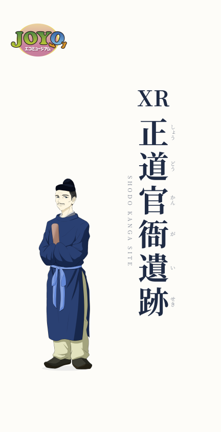
正道遺跡は標高40〜50mの低台地上にあり、東西約250m、南北約200mの範囲に広がります。これまでの調査で、5世紀前半の小型方形墳群、6世紀末〜7世紀前半の竪穴住居・掘立柱建物からなる集落、7世紀後半〜9世紀前半の掘立柱建物を中心とする官衙遺構などに区分されます。
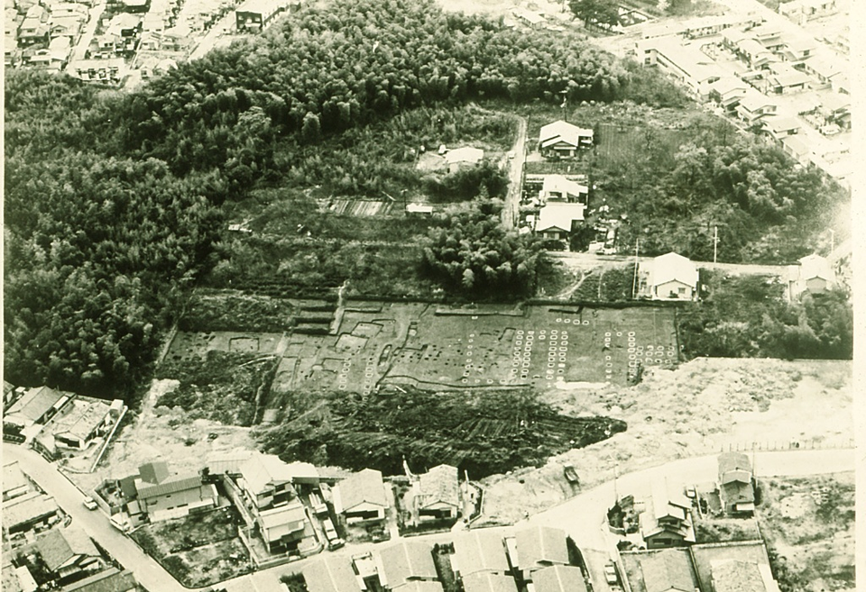
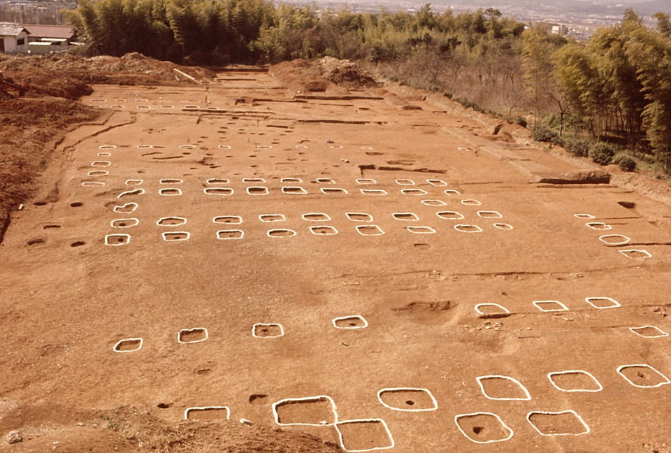
正道遺跡は、昭和40（1965）年に古代瓦が採集されたことから、地名をとって「正道廃寺」として注目されました。昭和41（1966）年に京都府教育委員会により行われた最初の調査では、南北に長い建物跡が見つかり、寺院の中心は東に広がるものと考えられました。その後も寺院跡として調査が行われ、出土した瓦類から遺跡の年代は7世紀後半から9世紀前半と想定されました。
ところが、昭和48（1973）年に城陽市で実施した第5次調査で、古墳時代から奈良時代にかけての遺構が重なって存在する複合遺跡であることが判明しました。それにより、遺跡の名称も寺院跡とは区別して「正道遺跡」と呼称することになり、その後も継続的な調査によって遺跡の姿が明らかになりました。
昭和49（1974）年9月に城陽市で最初の国の史跡に指定され、現在は官衙Ⅲ期の中心建物群（庁屋・副屋・南門など）の柱や遺構の一部を復元した史跡公園として整備・公開されています。
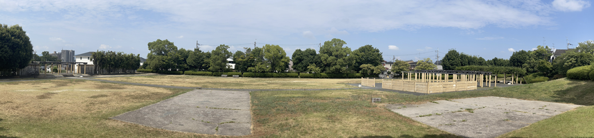
遺跡の広い範囲で見つかっている掘立柱建物群は規模が大きく、規格性をもって配置されており、飛鳥時代から平安時代初め（7世紀後半〜9世紀前半）の官衙と考えられます。
その配置や建物の方位からⅠ〜Ⅲ期の3時期に区分され、文献史料に見える「屯倉」の施設から大宝令以前の「評衙」、奈良時代の「郡衙」への変遷と結びつける見方があります。
（1）官衙Ⅰ期（7世紀後半）
遺跡の西半分に、やや東に傾いた方位に合わせて建物群が広がります。庇のある南北棟の建物を中心に、西・北に倉庫や棟の長い建物をL字形に配置して柵で区画しています。中心建物は棟が長く間仕切りがある実務的な建物と想定され、柵で囲まれる東西の規模は約92mで南を区画する遺構はありません。周囲の倉庫は平面積83㎡を超える大規模なもので、前期難波宮内裏西方官衙の配置に共通する古い官衙形態の一つと考えられます。
（2）官衙Ⅱ期（7世紀末〜8世紀初め）
Ⅰ期と同様に遺跡の西半分にやや東に傾いた方位で建物群が広がります。南寄りには柱穴が小さく棟の長い建物（長舎）と柵・溝で構成された建物群があり、Ⅰ期に一部重なります。南・西・北に棟の長い建物をコの字形に並べ、区画の東寄りに東西に庇をもつ南北棟の建物を置きます。規模は異なるものの、郡庁（郡役所の中心部）の一形態と共通性があります。
（3）官衙Ⅲ期（8世紀初め〜9世紀前半）
Ⅰ・Ⅱ期には空閑地となっていた遺跡の東半分に、方位を磁北に合わせて大型の建物群が計画的に配置されます。中心建物（庁屋）は6間×2間の四面庇建物で、前面には柵（目隠し塀）が巡ります。後方には7間×2間の副屋、前方の広場を挟んで東側には5間×3間の南北棟（東屋）、その前に8間×2間の東西棟（向屋）が並びます（西側に対称建物は見つかっていません）。
区画施設として西と南には両側に溝をもつ築地状の遺構があり、中心建物の正面で溝が途切れる位置に南門が配置されます。敷地は東西約105m、南北約125mの南北に長い規模と想定できます。
※画像をタップすると、官衙Ⅰ期→官衙Ⅱ期→官衙Ⅲ期の順に切り替わります。
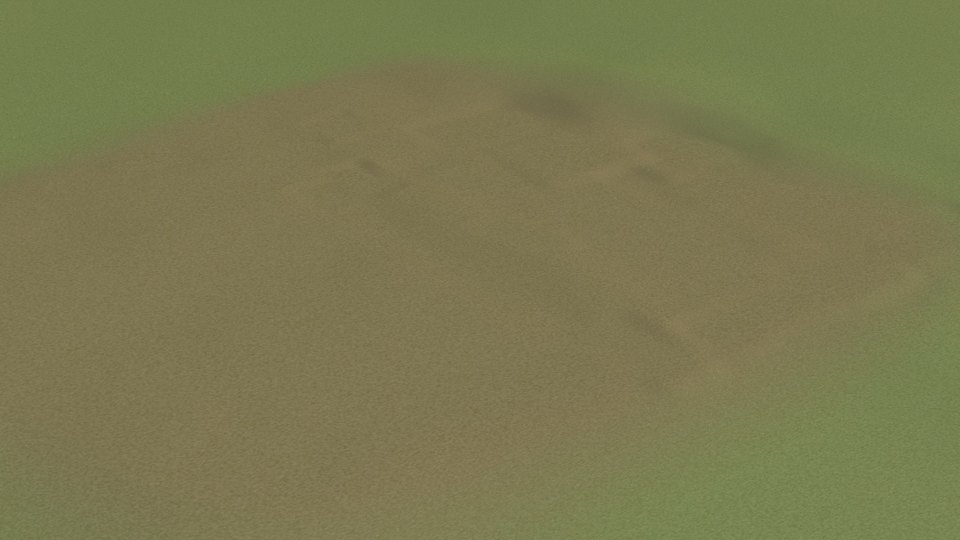
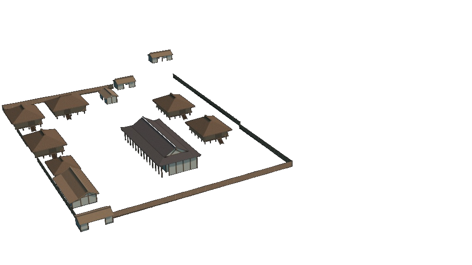
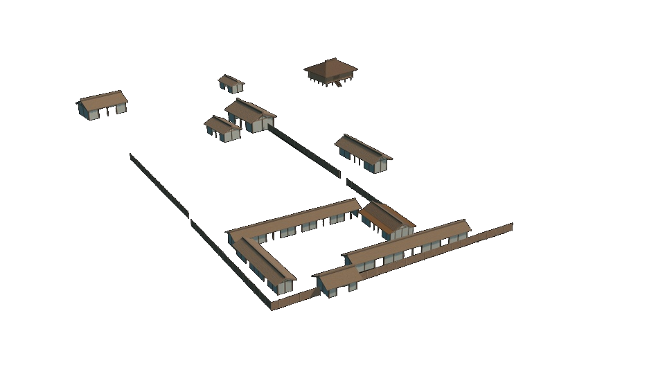
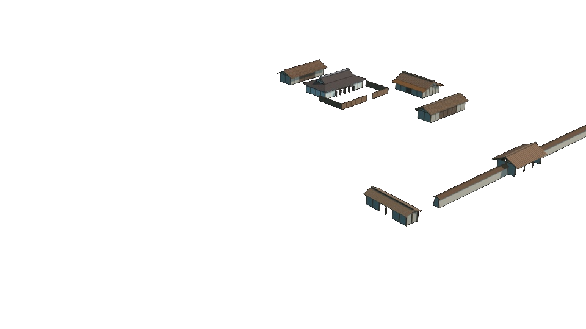
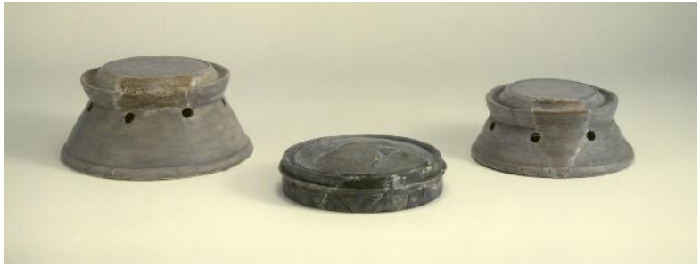
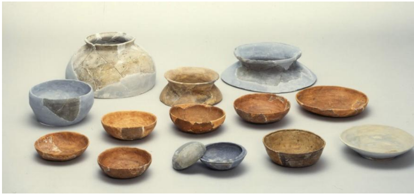
遺跡の西半分を中心に、5世紀前半に築造された9基の古墳が確認されています。1辺が8〜13m程度の小型の方墳で、墳丘は削られてほとんど残っていませんでしたが、周囲に掘られた溝が見つかっています。周囲には木棺を直葬した土坑もあり、集落が営まれるまでは墓地として利用されていました。
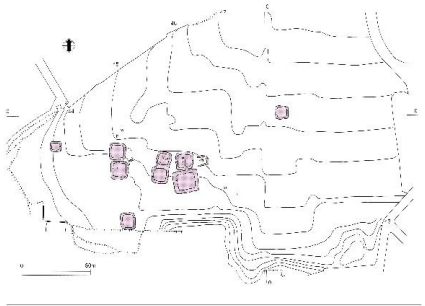
集落の遺構は、竪穴住居34棟と掘立柱建物10棟が見つかっています。竪穴住居はⅢ期の建物群がある遺跡の東半分を中心に広がり、平面形態は一辺3〜6mの方形でカマドをもちます。大半は6世紀末〜7世紀前半のものですが、奈良時代のものもあります。掘立柱建物は官衙の建物に比べると小規模なものです。
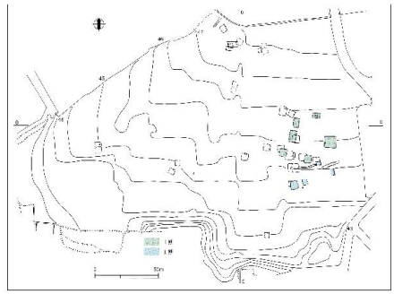
正道官衙遺跡、特に遺跡の東側区域では、飛鳥時代後期から奈良時代にかけての瓦や塼仏、三重塔や五重塔の頂上に使われた水煙や刹管の破片が見つかっています。このことから、かつて官衙に近接する場所には寺院が建っていたと想定できます。
残念ながら寺院の場所を示すような遺構は見つかっておらず、既に破壊され失われたようです。この寺に関する文献史料も見つかっていませんが、現在の地名をとって「正道廃寺」と呼んでいます。
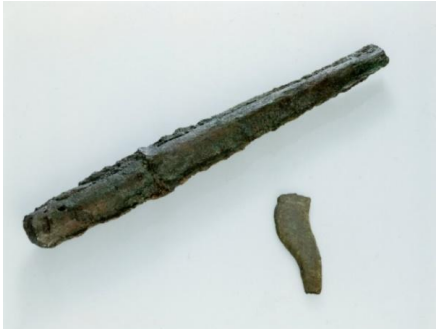